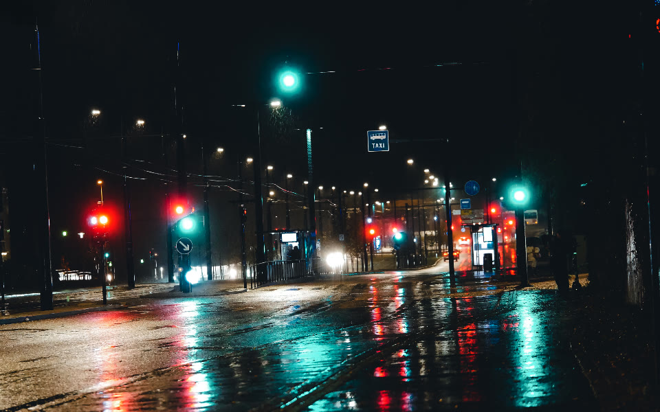
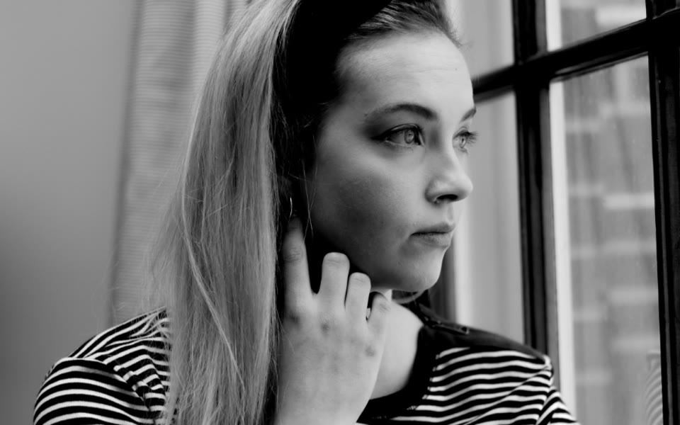
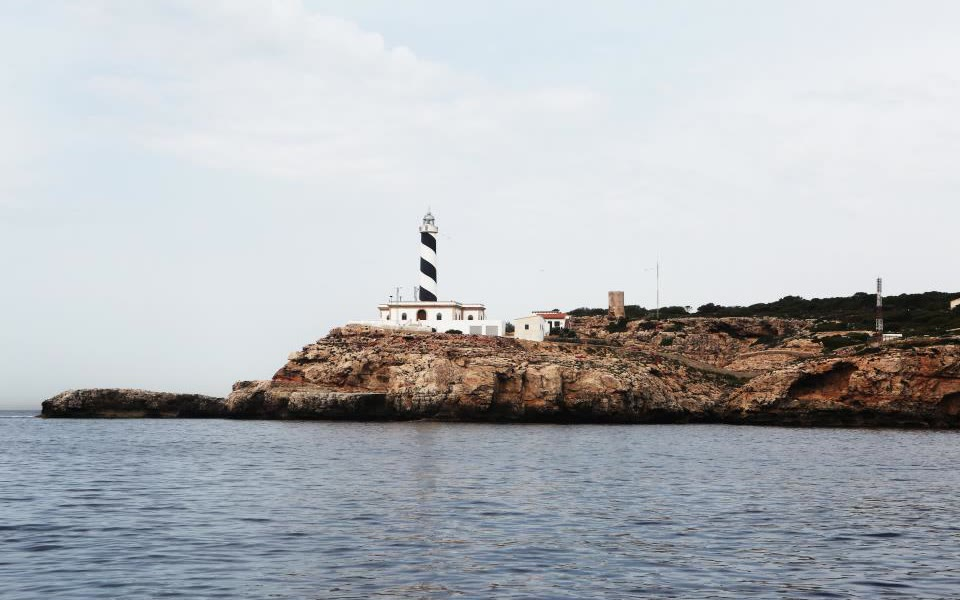

One lens.
Every day.
A full-frame camera with a fixed 35 mm f/2 lens, made to be carried rather than stored.
Shot on the Orrin One.
Straight from the camera. No profile, no crop.



Fixed lens, by design.
No mount, no dust, no decisions. The 35 mm f/2 is matched to the sensor at the factory and stays there.
35 mmThe field of view your eyes already use. Wide enough for a room, close enough for a face.
f/2Seven aperture blades. Round highlights wide open, clean edges stopped down.
24 MPFull-frame sensor, 14-bit files, 1/8000 s on the leaf shutter. Quiet enough for a library.
22.845.681116
Milled, not molded.
The body is cut from a single aluminium block. 480 g with the battery, sealed at every seam.
Silver
480 gWith the battery and a card. Lighter than a paperback.
B1830601252505001000
Seven blades, f/2 to f/16.
Wide open for a face in window light, stopped down for a street at noon. The ring clicks in thirds and never leaves your left hand.
f/22.845.681116
Which Orrin is yours?
Two sensors, two lenses, four bodies. Every one ships with a strap, a battery and a two-year warranty.
| Model | Orrin One$1,899 Buy |
One Monochrom$2,299 Buy |
Orrin Two$2,799 Buy |
Two Titan$3,499 Buy |
|---|---|---|---|---|
| Sensor | 24 MP full frame | 24 MP monochrome | 45 MP full frame | 45 MP full frame |
| ISO | 100 to 51,200 | 200 to 102,400 | 100 to 51,200 | 100 to 51,200 |
| Files | 14-bit raw, JPEG | 14-bit raw, JPEG | 14-bit raw, JPEG, HEIF | 14-bit raw, JPEG, HEIF |
| Lens | 35 mm f/2 | 35 mm f/2 | 28 mm f/1.7 | 28 mm f/1.7 |
| Stabilisation | None | None | 5-axis, 6 stops | 5-axis, 6 stops |
| Close focus | 30 cm | 30 cm | 17 cm | 17 cm |
| Viewfinder | Optical, 0.7× | Optical, 0.7× | Electronic, 5.8 M dots | Electronic, 5.8 M dots |
| Weight | 480 g | 480 g | 620 g | 590 g |
| Battery | 350 shots | 350 shots | 400 shots | 400 shots |
| Sealing | Rain and dust | Rain and dust | Rain and dust | Rain and dust |
| Finish | Silver, graphite, stone | Graphite | Silver, graphite | Titanium |